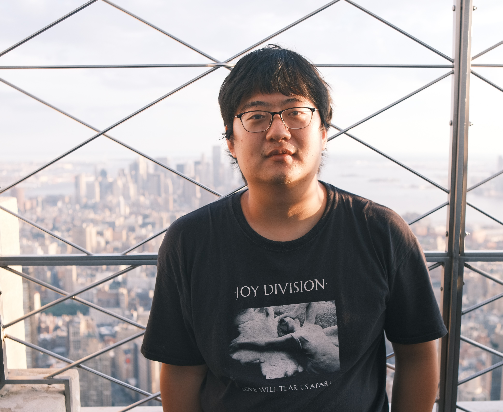

Bogeng Song 宋伯耕
Psychology PhD student, Georgia Tech
advised by Dr. Dobromir (Doby) Rahnev
I use computational modeling and psychophysics to understand how humans — and artificial neural networks — perceive the visual world and make decisions about what they see.
I'm a PhD student in the Rahnev Lab at Georgia Tech. My current work compares how people and deep neural networks form perceptual decisions and the confidence they attach to them, especially in tasks with more than two choices. The goal is to pin down what computations turn noisy sensory evidence into a decision, and how the brain knows when that decision is likely to be right.
Before Georgia Tech, I earned a Master's in Psychology at New York University, where I worked with Grace Lindsay, Marisa Carrasco, and Jonathan Winawer. There I studied visual perception and attention from several angles: measuring how motion discrimination changes across the visual field with psychophysics and eye tracking, using deep learning to segment visual cortex from fMRI, and modeling how bio-inspired attention shapes performance in visual and auditory networks.
Research interests
My research explores how perception, attention, and learning support decisions and confidence in humans and machines. I combine behavioral experiments, cognitive modeling, neuroimaging, and neural-network approaches to study the computational principles that link mind, brain, and artificial intelligence.
Perception, attention, and action
How sensory information is selected and used to guide behavior — including vision, eye movements, spatial attention, motion, and task difficulty.
Decisions, confidence, and metacognition
How evidence is accumulated into choices, how confidence is computed, and how people monitor uncertainty in their own perception and decisions.
Computational models of behavior and cognition
How formal models can reveal the hidden algorithms underlying perception, decision-making, learning, and confidence.
Brains, machines, and NeuroAI
How deep neural networks can serve both as models of biological vision and as tools for analyzing brain and neuroimaging data, letting us compare representations across brains and artificial systems.
Emerging interests in AI, language, and learning systems
I'm also drawn to modern AI systems — large language models, vision–language models, and reinforcement-learning agents. This is an emerging direction for me, and I'm curious about how these systems learn representations, generalize across tasks, and offer new ways to study intelligence in both humans and machines.
Questions that drive me
I'm fascinated by how the brain turns sensory information into meaningful behavior. How do we know where to look, what to attend to, and when to act? How do we make decisions under uncertainty — and how do we know whether to trust those decisions?
My work uses behavioral experiments, cognitive models, neural data, and artificial neural networks to study these questions. More broadly, I'm interested in how comparing humans, brains, and machines can reveal the computational principles underlying perception, decision-making, metacognition, and intelligence.
Looking ahead, I'm also interested in modern AI systems that combine perception, language, and action — large language models, vision–language models, and reinforcement-learning agents. I'm curious about how these systems represent information, learn from experience, and generalize across tasks, and what they can teach us about intelligence in both biological and artificial systems.
Education
-
PresentPhD, Psychology — Georgia Institute of TechnologyRahnev Lab · computational cognitive science & perceptual decision-making
-
MAMA, Psychology — New York UniversityWorked with the Lindsay, Carrasco, and Winawer labs
Training & Summer Schools
-
Summer 2025NeuroAI — Neuromatch AcademyDeep learning as a framework for understanding brains and behavior
-
Summer 2022Computational Neuroscience — Neuromatch AcademyModels of neural dynamics, decision-making, and learning